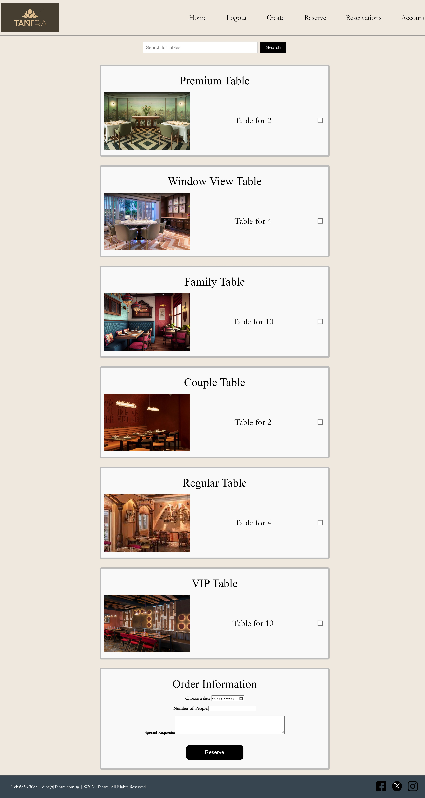
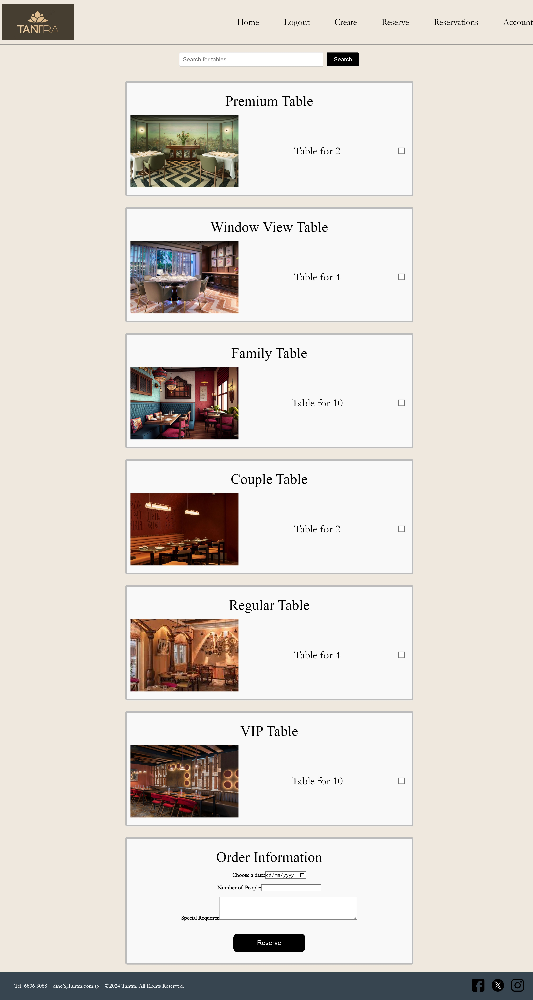

Project Samples
Music Visualization Video (Python)
This project involved creating a dynamic video that visualizes audio frequencies and beats in a creative way. Using Python, I processed audio data to generate visual effects synchronized with the music. The primary goal was to create an engaging visual experience that reflects the rhythm, tempo, and frequencies of the music in real-time. I used libraries like Pygame and Matplotlib to generate the graphical visuals and synchronize them with the audio tracks. The project helped me hone my skills in both audio data processing and creative visual rendering.
- Technologies Used: Python, Pygame, Matplotlib, Audio Frequency Analysis
- Challenges: Synchronizing audio data with visuals in real-time and ensuring the visuals were responsive and fluid.
- Outcome: A visually striking video that creatively represents music, showcasing my ability to combine programming with art and design principles.
Custom Web Portfolio
Designed and developed a custom portfolio website to showcase my personal and professional projects. The project focused on creating an aesthetically pleasing, responsive web layout with an emphasis on user experience (UX) and user interface (UI) design principles. I used HTML, CSS, and JavaScript to build the website, while also employing tools like Adobe Photoshop for image creation and optimization. The goal was to present a user-friendly, mobile-optimized portfolio that could seamlessly adapt to various screen sizes.
- Technologies Used: HTML, CSS, JavaScript, Adobe Photoshop
- Challenges: Creating a responsive layout that adapts to all devices and optimizing the website for fast loading times.
- Outcome: A visually appealing, fully responsive portfolio that showcases my skills and projects in a professional manner, demonstrating my front-end development expertise.
Elden Ring-Themed Snake Game (C#)
This project was a creative twist on the classic Snake game, incorporating an Elden Ring theme. Built with C# and Unity (optional if used), the game implemented object-oriented programming (OOP) principles to create smooth gameplay mechanics and an engaging user interface. The challenge was to seamlessly integrate the Elden Ring visual elements into the Snake gameplay, making it both visually interesting and true to the game's theme. I focused on creating dynamic obstacles, power-ups, and scoring systems, all while ensuring the game mechanics were intuitive and fun.
- Technologies Used: C#, Game Design Principles
- Challenges: Adapting a classic game to fit the Elden Ring theme and designing intuitive gameplay mechanics.
- Outcome: A fun and visually immersive game that combines classic gameplay with modern aesthetics, improving my skills in game development and theme customization.
Hotel Reservation System (PHP)
Developed a hotel booking system using PHP and MySQL, which allows users to reserve rooms, view room availability in real time, and securely manage bookings. The system also included user authentication features for account creation, login, and reservation management. The primary objective was to design an intuitive interface and ensure the system was functional, secure, and scalable. I utilized both front-end (HTML/CSS) and back-end (PHP/MySQL) skills to implement real-time booking features and a secure login system.
- Technologies Used: PHP, MySQL, HTML, CSS, JavaScript
- Challenges: Implementing real-time availability checks and integrating a secure login system with proper data validation.
- Outcome: A secure, fully functional hotel reservation system that provides a seamless user experience for booking rooms and managing reservations.
 
